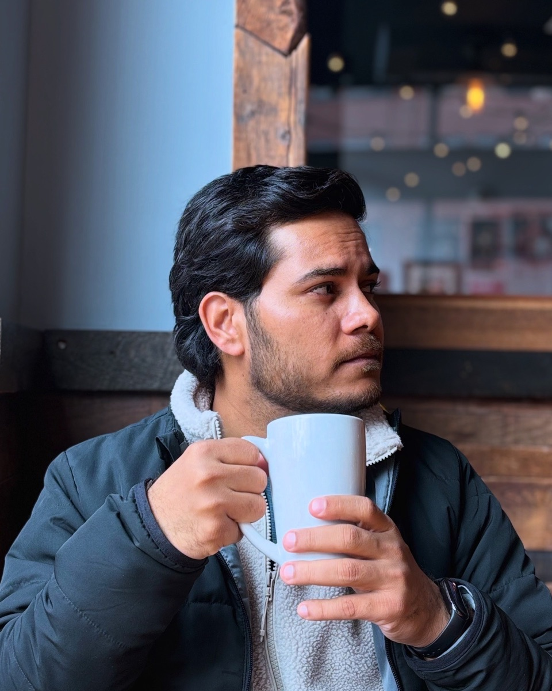
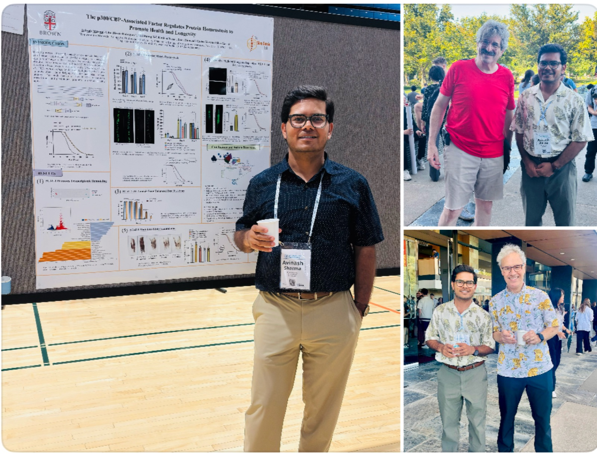

Biologist · Writer · Photographer
“What am I without the joy of science, a camera, and a question still unanswered?”
“Holmes”—that’s my pen name. I’m Avinash: a biologist by training, a writer by instinct, and a photographer whenever something deserves a second look. My work has crossed several domains of biology; my curiosity wanders further—to chess, philosophy, life, and the universe.
My research journey
Curiosity has never kept me in one corner of biology.
- B.Sc.University of Lucknow
- M.S., Life SciencesIISER Kolkata
- Research FellowJawaharlal Nehru University
- Ph.D., Plant Molecular BiologyBen-Gurion University
- Postdoctoral ResearchBrown University

Across plants, pathogens, proteins, and aging, I have been drawn to the same quiet puzzle: how living systems sense change, preserve balance, and decide what to let go.
That interest has taken me through molecular genetics, host–pathogen biology, structural and protein biology, plant ubiquitin signaling, and now the biology of aging. At Brown University, I explore how chromatin regulation and proteostasis shape stress resilience and longevity in Caenorhabditis elegans. During my Ph.D. at Ben-Gurion University, I studied the Arabidopsis E3 ubiquitin ligase PUB41 and its roles in development, hormone signaling, and drought response. Different organisms have given me different ways to ask a question that has stayed remarkably consistent: how does life remain itself while everything around it—and within it—changes?
Science and health, explained with care.
“A cell remembers, adapts, repairs, and eventually fails. I want to know why.”
— Avinash Sharma HolmesThrough my lens
Fragments of the world that made me stop.
Nature, architecture, travel, and small details—seen slowly and shown whole.
Let’s connect